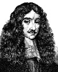

Güler yüzlü Kral 2. Charles (1630-1685) keyifli yaşam tarzı, nüktedan zekası ve İngiliz tarihinde oynadığı önemli rol ile tanınmaktadır. Monarşinin restorasyonunun ardından 1661 yılında tahta çıkmıştır. İngiltere İç Savaşı’nın çatışma ve şiddet ortamının ardından ülkesinde istikrarın sağlanmasına katkıda bulunmuştur.

Charles, Londra’da doğmuştu. Kral 1. Charles’ın (1600-1649) ve Kraliçe Henriette Maria’nın (1609-1669) en büyük oğluydu. Henüz genç bir delikanlıyken kralcıların safında savaşmış ve babasının yenilip idam edilmesinin ardından Fransa’ya sürgüne gönderilmiştir.
1650 yılında İskoçya’ya gitmiş ve burada iç savaşın galibi Cromwell’in (1599-1658) rakiplerini harekete geçirmeye çalışmıştır. Ertesi yıl Cromwell’in kuvvetlerine yenilmesinin ardından bir meşe ağacına saklanarak kurtulmasıyla ün salmıştır. Bu olayın ardından sonraki on yılını geçireceği Fransa’ya gitmiştir.
Cromwell’in ölümünün ardından iki yıl boyunca yaşanan siyasi kaos sırasında yorgun düşen Parlamento, en sonunda Charles’ı tahta geçmesi için davet etmek zorunda kalmıştır. Zafer alayı, 29 Mayıs 1660’ta Londra’ya girmiştir ki bu tarih aynı zamanda onun 30. doğum günüydü. Çok geçmeden ülkeye göreli bir barış ve istikrar getiren restorasyon dönemi başlamıştır.
Charles iç politikada babasının düşmanı olan birçok kişiyi affetmiştir. Aslında hoşgörüsü nedeniyle isyancıları daha sert bir şekilde cezalandırmadığı için kralcılar tarafından eleştirilmiştir. Charles aynı zamanda dini sorunlar konusunda ılımlı bir tutum sergilemiş, Katolikler’e dönük sert uygulamalara karşı çıkmıştır. Charles döneminde Cromwell’in çıkardığı katı Püriten yasalar gevşetilmiştir. Tiyatrolar yeniden açılmış, Maypole etrafında dans etmek gibi eski adetler yeniden uygulanmaya başlanmıştır.
Portekizli bir prensesle evli olmasına rağmen Charles’ın çok sayıda başka ilişkisi olmuştur. Farklı kadınlardan düzinelerce gayrimeşru çocuğu vardır. Hiçbir meşru varisi olmadığı için kardeşi 2. James (1633-1701) onun yerine tahta geçmiştir.
James bir Katolik olduğu için pek çok Protestan tarafından kabul görmemiştir. Glorious Devrimi ile tahttan indirilmeden önce sadece üç yıl iktidarda kalabilmiştir. Parlamento devrimden sonra, halen geçerli olan ve Katolikler’in İngiliz tahtına çıkmasını yasaklayan bir kanun çıkarmıştır.
Ek Bilgiler
1- Amerika Birleşik Devletleri’nin doğusundaki pek çok yerleşim yeri 2. Charles’ın döneminde kurulmuş ve isimlerini onun adına yapılan göndermelerden almıştır. Charleston, Charlestown, Kuzey ve Güney Carolina gibi yer isimleri kralın Latince adı olan Carolus’tan türetilmiştir.
2- Galler Prensesi Diana (1961-1997), Charles’ın evlilik dışı çocuklarından birinin soyundan geliyordu.
3- Kraliyet adetleri gereğince Portekizliler, Charles’a Braganzalı Catherine (1638-1705) ile evlendiği için bir hediye vermek zorundaydılar. Bu hediye daha sonra İngiltere’nin Hindistan’daki en önemli merkezlerinden biri haline gelecek olan Bombay şehriydi.